Patch Managerの実行・結果確認・運用
仕様
構成・動作
Scanで不足パッチを検出し、変更承認後にInstallを実行します。コマンドの成功、準拠状況、新規適用KB、業務復旧をそれぞれ確認します。
管理範囲
本書の設定表と画像は検証環境の例です。実作業では承認済みパラメータシートの値を使用します。
制約事項
取得済みのInstall結果では新規適用は0件でした。Scan単独実行と、不足パッチがある状態での適用・再起動・復旧確認は追加確認が必要です。
運用作業
1. 実行前チェック
次のすべてを満たすまでMaintenance Windowを実行しません。
- EC2が実行中で、全ステータスチェックが合格です
- Fleet ManagerのPing statusがOnlineです
-
AmazonSSMAgentがRunningです - EC2 IAMロールに必要なSSM権限がある
- EC2 IAMロールで
sample-mw-bucket/patchmanager/へ書き込める -
Patch Group=sample-windowがEC2へ保存されている -
sample-windowと使用するWindowsパッチベースラインの関連付けを確認済みです - ターゲットに一致するEC2がパイロット1台だけです
- 初回テストが
Operation=Scanです - 初回テストの
RebootOptionがNoRebootです - 本番Installの場合、バックアップ、再起動、業務停止および確認担当の承認がある
2. Scanテストと成功判定
- 対象Maintenance Windowのタスクで
Operation=Scan、RebootOption=NoReboot、登録済みターゲットとS3出力先を確認します。 - メンテナンスウィンドウの次回実行日時を確認し、承認済み時間帯に有効化します。検証用の日時へ変更する場合は元のスケジュールを記録します。実行開始後、「履歴」で実行IDと開始時刻を記録します。
- Maintenance Window、タスク、Run Commandおよびノード別結果を確認します。
- S3へ標準出力／標準エラーが保存されたことを確認します。
- Patch ManagerのComplianceを開き、最新スキャン結果を確認します。
次をすべて満たした場合、Scan実行成功と判定します。
- Run Command全体と対象ノードが
Success - Windowsの
PatchWindowsステップがSuccess、応答コード0 - Failed、Timed out、Delivery timed outが0
- S3出力が実行IDおよび対象ノードと一致
- Complianceに対象ノード、ベースライン、最新スキャン時刻が反映
Scan後にMISSINGまたはNonCompliantが表示されても、未適用パッチを正常に検出した結果であればScanコマンドの失敗ではありません。
今回の確認結果
Scanを意図した2026年9月8日00:00 JSTの実行は、Run Command出力上ではOperationType=Install、RebootOption=NoRebootでした。そのため、Maintenance WindowとRun Commandの成功は確認できましたが、Scan単独テストの証跡としては扱いません。
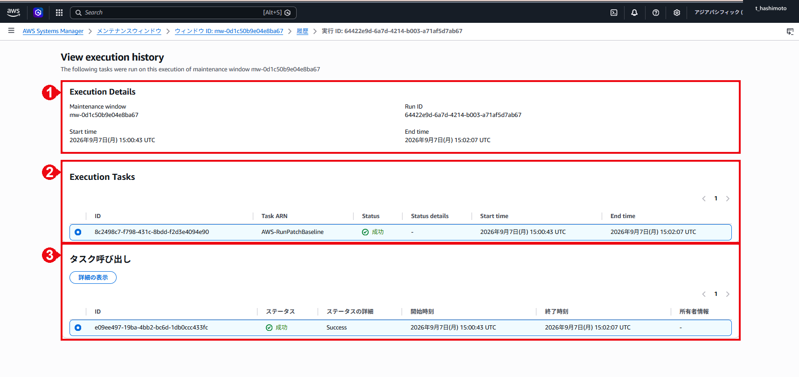
3. Installテストと成功判定
Scan結果と変更承認を確認した後、同じパイロット1台へOperation=Installを実行します。RebootIfNeededを使用する場合は、業務停止時間と再起動後確認を事前に調整します。
次をすべて満たした場合、Install実行成功と判定します。
- Maintenance Window、タスク、Run Commandおよび対象ノードが
Success - Windowsの
PatchWindowsステップがSuccess、応答コード0 - S3へ実行ログが保存されている
- 再起動後、EC2全ステータスチェックが合格で、Fleet ManagerがOnlineへ復帰
- Windowsサービス、イベントログ、アプリケーションおよび業務疎通に異常なし
- 再Scan後、意図したベースライン内で
MISSING=0、FAILED=0、INSTALLED_PENDING_REBOOT=0
Install前にWindowsとAWSの状態を記録する
- Windowsへ管理者権限で接続します。
winverを開き、Windows ServerのバージョンとOSビルドを記録します。- 「設定」－「更新とセキュリティ」－「Windows Update」を開き、利用可能な更新、再起動待ちおよび管理ポリシーの表示を記録します。
- 「更新の履歴を表示する」を開き、既存履歴を記録します。事前確認では「更新プログラムのチェック」を押しません。
- Systems ManagerのComplianceとFleet Managerのパッチ画面を開き、対象ノード、ベースライン、最終更新日時、必要な更新、エラーおよび適用済みKBを記録します。

確認時の記録：Install前はWindows Server 2022 Version 21H2、OSビルド20348.5499でした。
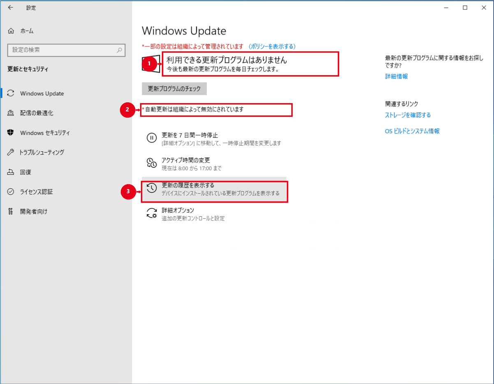
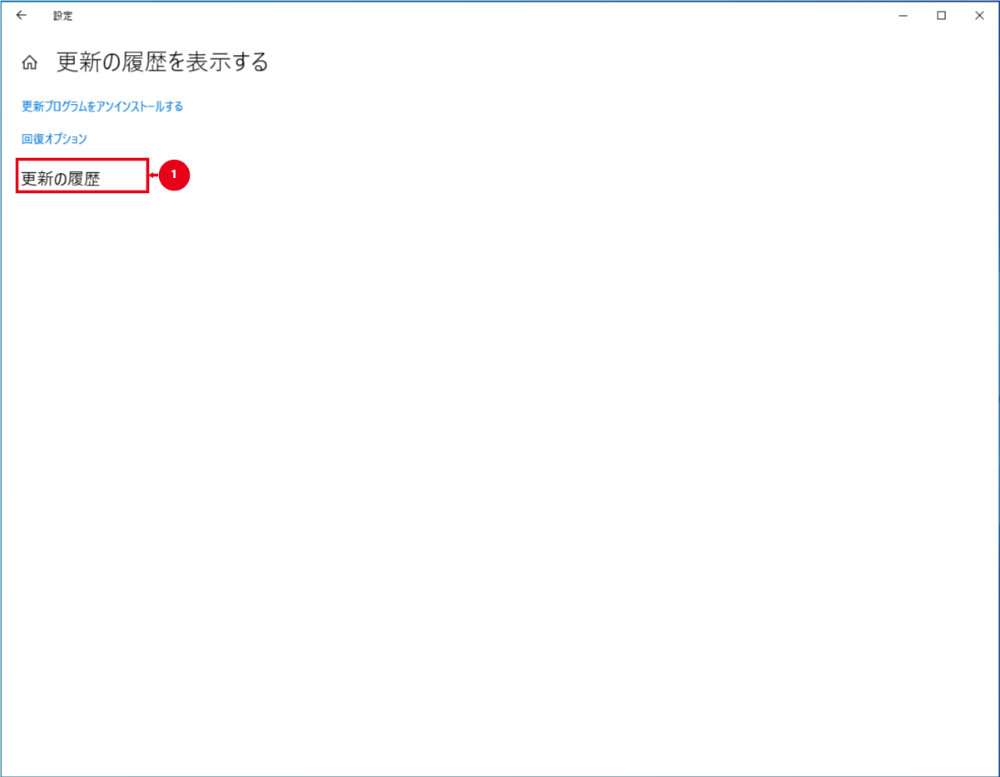
確認時の記録：画面では履歴が表示されていません。
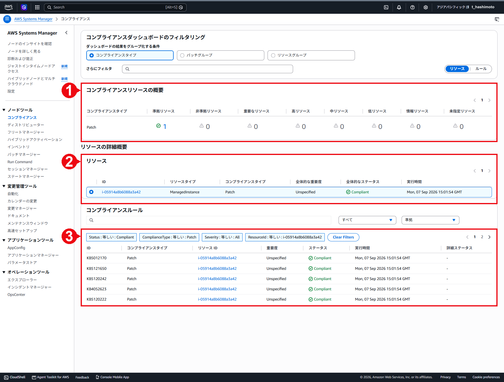
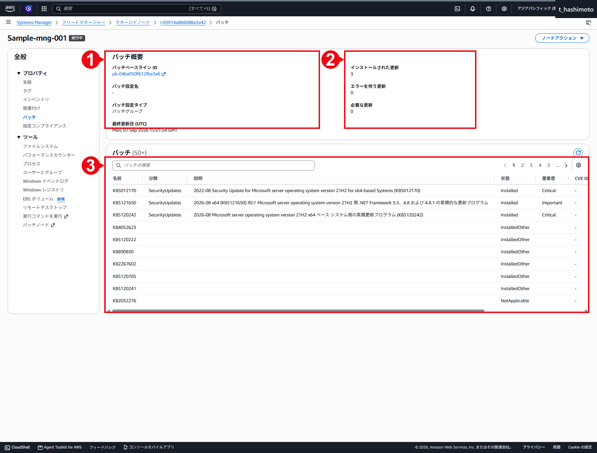
Installと再起動設定を確認する
Installを実行する場合は、Maintenance WindowのRun Commandタスクを編集し、Operation=Installを選択します。RebootIfNeededは、Patch Managerが1件以上のパッチをインストールした場合、またはINSTALLED_PENDING_REBOOTを検出した場合にOSを再起動します。個々のパッチが再起動を必要とするかを判定してから再起動する設定ではありません。タスクを更新後、承認済みのInstall実行日時を設定して有効化し、実行開始後に履歴から実行IDを記録します。検証終了後は、承認済みの定期スケジュールとタスク設定へ戻します。今回再起動しなかったのは、新規適用パッチがなく、InstalledPendingRebootCount=0だったためです。
NoRebootを選択すると、Patch Managerはパッチ適用後にOSを再起動しません。ただし、インストーラーによるサービス再起動まで抑止するものではありません。
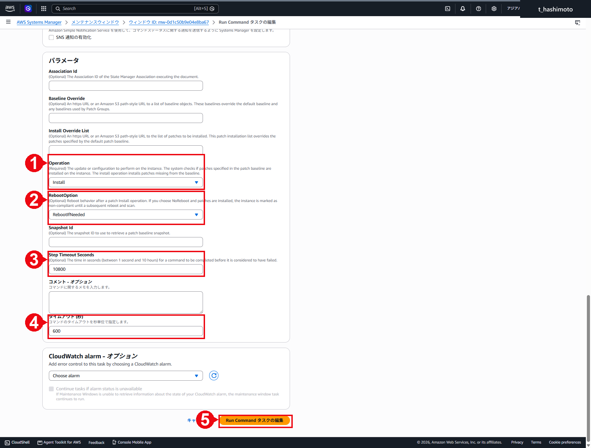
AWS-RunPatchBaseline command document
AWSコンソールでInstallの成功を確認する
- Maintenance Windowの「履歴」を開きます。
- Install実行のステータスが「成功」となっていることを確認し、開始時刻と終了時刻を記録します。
- 実行IDを選択し、Execution Tasksとタスク呼び出しが「成功／Success」となっていることを確認します。
- Run CommandのコマンドIDを開き、全体、詳細および対象ノードのステータスが「成功」で、エラー数と配信タイムアウト数が0となっていることを確認します。
- コマンドドキュメントが
AWS-RunPatchBaseline、実行パラメータがInstall/RebootIfNeededとなっていることを確認します。 - 「出力の表示」で
OperationType、RebootOption、InstalledCount、MissingCount、FailedCount、InstalledPendingRebootCountおよび新規インストールKB一覧を記録します。
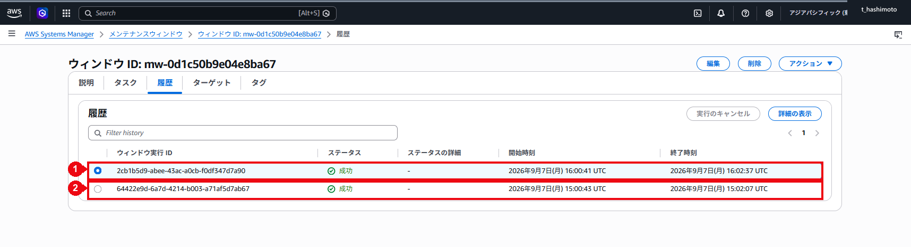
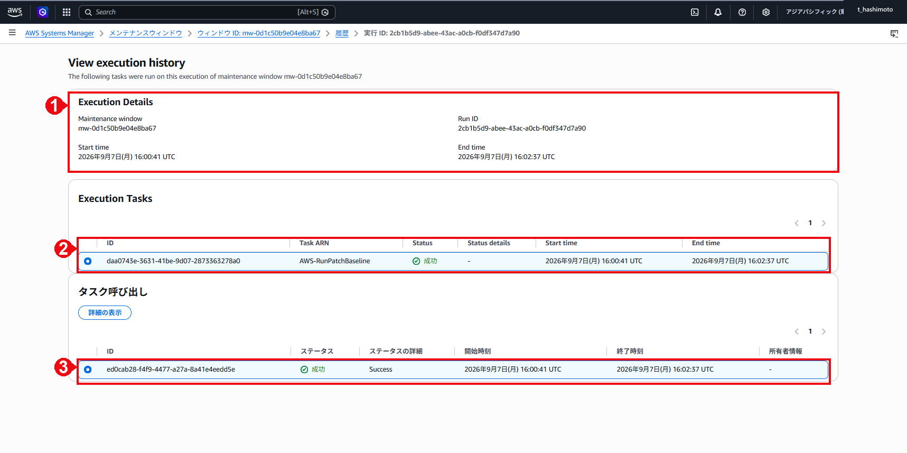
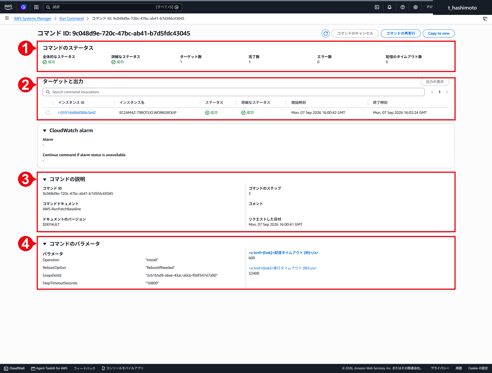
今回のInstall実行結果
2026年9月8日01:00 JSTの検証結果は次のとおりです。
| 項目 | 確認値 | 判定 |
|---|---|---|
| コマンドID | 9c048d9e-720c-47bc-ab41-b7d5fdc43045 |
記録済み |
| Operation／RebootOption | Install／RebootIfNeeded |
設定どおり |
| 全体／対象ノード | Success／Success |
成功 |
| 応答コード | 【証跡未取得】 |
今回取得した画像には表示されていません。次回は対象ノードの出力詳細で取得します |
| 使用ベースライン | AWS-DefaultPatchBaseline、pb-04ba050f612fba3a6 |
確認済み |
| Patch Group | sample-window |
実行出力で確認済み。ベースライン関連付けの直接照会は未取得 |
| InstalledCount | 3 |
ベースラインに対する既存のインストール済み件数。今回3件を新規適用した意味ではない |
| MissingCount／FailedCount | 0／0 |
ベースライン対象の不足・失敗なし |
| InstalledPendingRebootCount | 0 |
再起動待ちなし |
| 新規インストールKB一覧 | なし | 今回新規に適用されたパッチなし |
| 再起動 | 発生なし | 対象更新がなかったため |
| S3出力 | 保存確認済み | sample-mw-bucket/patchmanager/に保存された出力で、コマンドID、ノードID、実行種別、集計値および実行時刻をRun Command画面と照合済み |
Successは、指定したベースラインに基づく処理がエラーなく完了したことを示します。今回のように新規適用対象が0件の場合もSuccessとなります。実際に更新されたKBを確認する場合は、Run Command出力末尾のKbArticleId / Installed / Message一覧、Windowsの更新履歴およびOSビルドを実行前後で比較します。
今回のS3出力では、InstalledCount=3、InstalledOtherCount=6ですが、実行末尾のKbArticleId / Installed / Message一覧は空でした。このため、3件と6件はスキャン時点で既にインストール済みと分類された件数です。今回新規に9件を適用した意味ではありません。rebootCount=0、InstalledPendingRebootCount=0のため、今回の実行で再起動は発生しておらず、再起動待ちもありません。
S3でInstall実行ログを確認する
- S3コンソールで、Run Commandタスクに指定したバケットを開きます。
- キープレフィックス
patchmanager/を開きます。 - 対象コマンドID、対象ノードID、プラグイン名
awsrunPowerShellScript、ステップ名PatchWindowsの順に開きます。 stdoutを開き、Run Command画面とコマンドID、ノードID、実行時刻、OperationType、RebootOptionおよび集計値が一致することを確認します。stderrが作成されている場合は内容を確認し、エラーの有無を判定します。
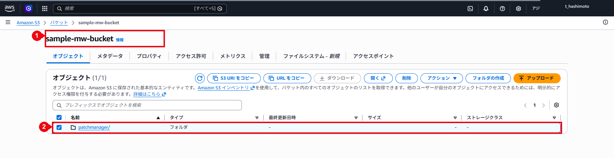
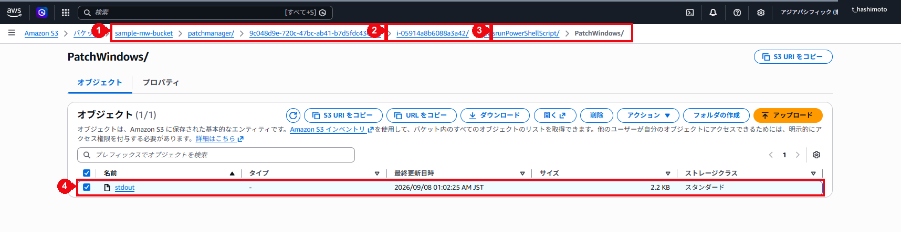
Windows Server内でInstall後の状態を確認する
- 再起動が発生した場合は、RDPまたは承認済み運用経路で再接続できることを確認します。
winverを開き、Install前に記録したWindowsバージョンとOSビルドから変化したか比較します。- 「コントロールパネル」－「プログラム」－「プログラムと機能」－「インストールされた更新プログラムを表示」を開きます。
- KB番号とインストール日をInstall前後で比較します。今回の実行時刻より前の日付のKBは、今回SSMが新規適用した更新として扱いません。
- 必要に応じてWindowsイベントログ、サービス状態および業務アプリケーションの疎通を確認します。

確認時の記録：結果はInstall前と同じVersion 21H2、OSビルド20348.5499です。OSビルドの変化はありませんでした。

確認時の記録：表示された日付はいずれもSSM実行日の2026年9月8日より前です。今回新規に適用されたKBではありません。
4. Systems Managerの成功とWindows Update表示の違い
Systems ManagerのSuccessと、Windows Update画面に「利用可能な更新プログラムはありません」と表示されることは同じ意味ではありません。また、Patch ManagerでCompliantでも、Windows Updateに別の更新が表示される場合があります。
- Patch Managerの
Success：AWS-RunPatchBaselineコマンドが正常終了したことを示します - Patch Managerの
Compliant／MissingCount=0：使用したパッチベースラインで承認された更新に不足がないことを示します - Windows Updateの表示：Windows UpdateまたはWSUSが現在提示する更新を表示します。パッチベースラインの分類、重要度および承認待機日数と一致するとは限りません
今回使用したAWS-DefaultPatchBaselineは、Windows Serverについて、分類がCriticalUpdatesまたはSecurityUpdatesで、MSRC重要度がCriticalまたはImportantの更新を、公開または更新から7日後に承認します。Windows Updateで検出されたKB2267602はMicrosoft Defender Antivirusのセキュリティインテリジェンス更新です。頻繁に更新される定義更新です。今回のデフォルトベースラインで承認されたOSパッチとは別に管理されるため、Patch ManagerがCompliantでもWindows Updateに表示される場合があります。

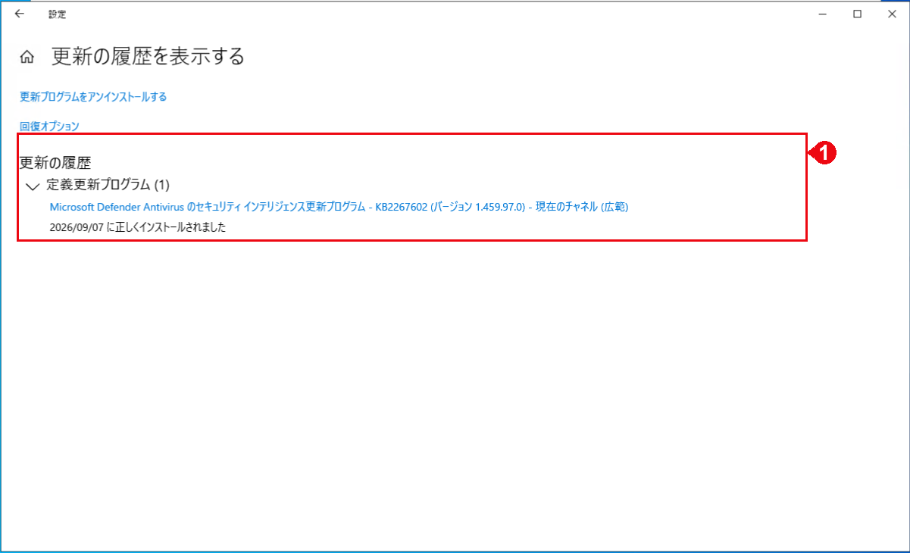
⚠️ 注意：実行前のWindows Update操作
SSMによる適用前後を比較する場合、Install前にWindows Updateの「更新プログラムのチェック」を押すと、Windows Update側でダウンロードやインストールが始まり、SSMの適用結果と混在する可能性があります。事前確認では画面表示と既存履歴だけを記録し、手動チェックはSSM実行後の切り分け作業として実施します。
5. 失敗時の対応と切り戻し
- 対象ウィンドウを無効化して次回実行を停止し、コマンドID、対象ノード、エラー出力を記録します。無効化だけでは進行中の処理は停止しません。
- SSM接続、更新元への通信、WindowsイベントログとRun Command出力を確認します。
- 再実行または復元が必要な場合は、影響範囲を確認し、事前に準備した復元手順に従います。更新プログラムの削除可否はKBごとに確認します。
- 復旧後、Online、サービス、業務疎通を確認し、スケジュールを再開します。
運用後確認
- Scan／NoRebootの単独実行と応答コード0を確認している
- Install結果と新規適用KBを記録している（対象0件の場合は0件と記録）
- 必要な再起動後、SSM接続・サービス・業務疎通が復旧している
- 再Scanの不足・失敗・再起動待ちを確認している
- コマンドID・ノードID・実行時刻とS3ログを照合している